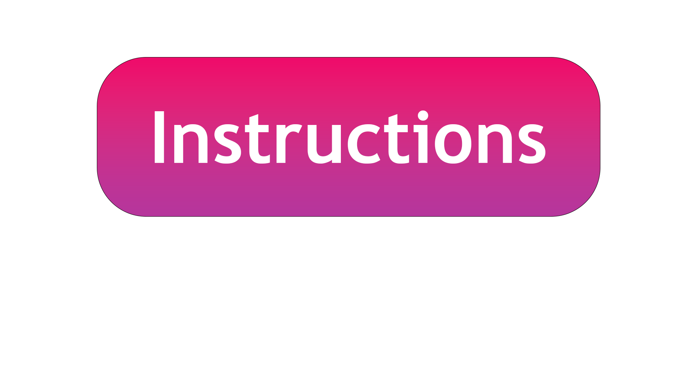

HACKMIT 2022:
GEODESIC KALEIDOSCOPE
Welcome To Space.

Hello! Welcome to our Geodesic Kaleidoscope!
This web application was built to create beautiful images by simulating the movement of light in a gravitational field. The simulation of the movement of
light built into this website imitates the actual bending of light due to massive objects according to the laws of general relativity.
You may add different types of objects, with different masses, by clicking on the blue boxes and then placing them on the canvas. Press the deselect button to cancel any placement.
You may speed up the light ray using the slider in the bottom left corner. For light that exits the canvas, you may choose between reflecting (allowing the light to reflect off of the edges of the canvas) or
warping (light exiting the bottom of the screen will re-enter through the top).
To start the simulation, press the start button. At any point in the simulation, you may pause the simulation, or you can reset your canvas. You can use any of the buttons, slider, or checkbox during the simulation itself.
Finally, you can download a beautiful screenshot by clicking on the screenshot button.
Made with ❤ by Ishank, Abhay, and Andrew